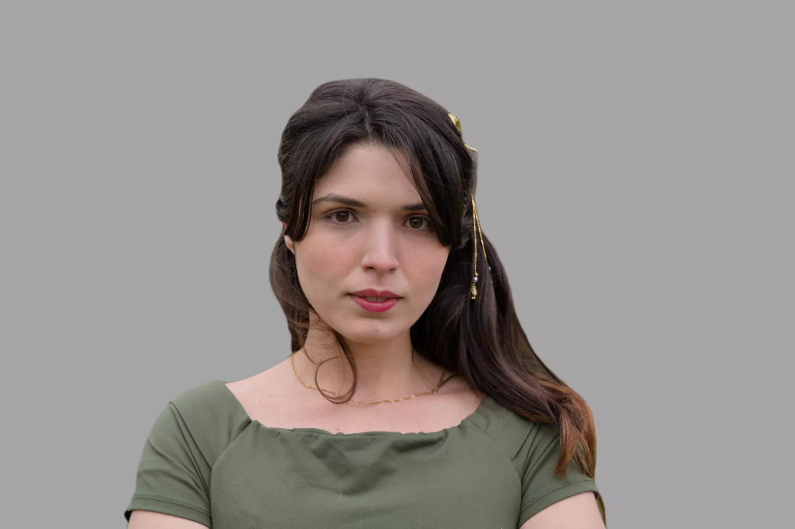
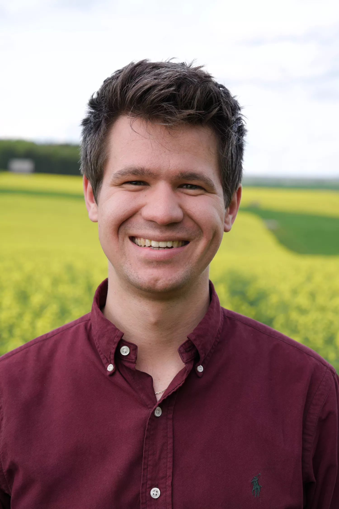

Guardians of Time: Capturing Moments, Preserving Memories

Portraits
With my artistic vision and personalized approach, I
specialize in capturing the true essence of individuals,
families, and special moments. Through my lens, I craft
stunning portraits that reflect your unique personality,
ensuring your memories are beautifully preserved for
generations to come.

Application Photos
With a focus on precision and a keen eye for detail, I excel
at creating application photos that beautifully portray your
individuality. Through skillful composition and expert
lighting, I craft professional images that enhance your
professional brand and make a lasting impact.

Travel
Immerse yourself in the breathtaking beauty of the world
through my lens as I capture the essence of captivating
destinations. With a passion for exploration and a deep
appreciation for diverse cultures, I specialize in travel
photography that transports you to remarkable places and
moments.
AUTHENTIC, RAW LIFESTYLE PHOTOGRAPHY
I embrace the authentic essence of everyday existence and the
transient elegance found in the moments that often go unnoticed.
My photography is a reflection of this appreciation, as I strive
to encapsulate each image with this perspective in mind.

It's me, Sjard, the man behind the camera. With each click of the
shutter, I capture the raw essence of individuals, unveiling their
unique stories to the world. I am a nomad, a seeker of truth and
beauty, unafraid to dive into the uncharted corners of the world
and unravel the stories waiting to be told.
With an unwavering dedication to my craft, I embark on countless adventures, traversing continents and delving into the uncharted corners of humanity. Through my lens, I seek to encapsulate the diverse tapestry of cultures, emotions, and experiences that weave our global fabric. Every photograph is a testament to the beauty and resilience found in every corner of our world.
My lens is a witness to history, capturing moments that would otherwise be forgotten. It is a conduit for empathy, inviting viewers to step into the shoes of those whose stories are being told. It is a celebration of the human experience, reminding us of our capacity to endure, to create, and to connect.
With an unwavering dedication to my craft, I embark on countless adventures, traversing continents and delving into the uncharted corners of humanity. Through my lens, I seek to encapsulate the diverse tapestry of cultures, emotions, and experiences that weave our global fabric. Every photograph is a testament to the beauty and resilience found in every corner of our world.
My lens is a witness to history, capturing moments that would otherwise be forgotten. It is a conduit for empathy, inviting viewers to step into the shoes of those whose stories are being told. It is a celebration of the human experience, reminding us of our capacity to endure, to create, and to connect.
What They Say
I recently had the pleasure of having a photography portrait
session, and I couldn't be happier with the results; the
portrait is stunning and I will cherish it forever, as it
beautifully captures a moment of joy and self-expression that
I will always hold dear.
 Gabriella Campus
Gabriella Campus
Gabriella Campus
Our outdoor portrait session was absolutely incredible! The
photographer skillfully captured genuine moments amidst the
breathtaking mountain backdrop. The session was relaxed and
enjoyable, allowing us to be ourselves while the photographer
effortlessly worked his magic.
Maria Fontenele
Maria Fontenele
Our family group photo session was an absolute delight! The
photographer captured the warmth and connection within our
family in a cozy setting. The session was filled with laughter
and joy, creating a relaxed atmosphere where we could be
ourselves.
Jakob Schneider
Jakob Schneider